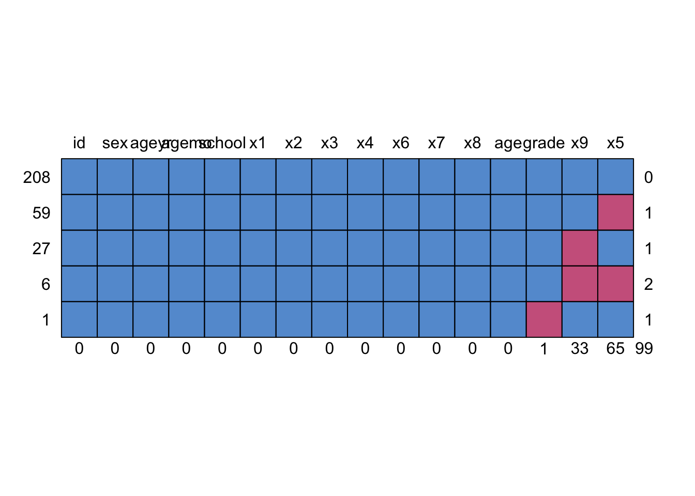

Chapter 15 Week12_1: Lavaan Lab 12 SEM for Missing Data
In this lab, we’ll use an example dataset HolzingerSwineford1939 in the package lavaan. Hence, lavaan must be installed.
Load up the lavaan library:
library(lavaan)Use data() to load HolzingerSwineford1939:
data(HolzingerSwineford1939)
head(HolzingerSwineford1939,3)## id sex ageyr agemo school grade x1 x2 x3 x4 x5
## 1 1 1 13 1 Pasteur 7 3.333333 7.75 0.375 2.333333 5.75
## 2 2 2 13 7 Pasteur 7 5.333333 5.25 2.125 1.666667 3.00
## 3 3 2 13 1 Pasteur 7 4.500000 5.25 1.875 1.000000 1.75
## x6 x7 x8 x9
## 1 1.2857143 3.391304 5.75 6.361111
## 2 1.2857143 3.782609 6.25 7.916667
## 3 0.4285714 3.260870 3.90 4.416667tail(HolzingerSwineford1939,3)## id sex ageyr agemo school grade x1 x2 x3 x4
## 299 348 2 14 3 Grant-White 8 4.666667 5.50 1.875 3.666667
## 300 349 1 14 2 Grant-White 8 4.333333 6.75 0.500 3.666667
## 301 351 1 13 5 Grant-White NA 4.333333 6.00 3.375 3.666667
## x5 x6 x7 x8 x9
## 299 5.75 4.285714 4.000000 6.00 7.611111
## 300 4.50 2.000000 5.086957 6.20 4.388889
## 301 5.75 3.142857 4.086957 6.95 5.166667?HolzingerSwineford1939- The classic Holzinger and Swineford (1939) dataset consists of mental ability test scores of seventh- and eighth-grade children from two different schools (Pasteur and Grant-White).
- In the original dataset (available in the MBESS package), there are scores for 26 tests.
- However, a smaller subset with 9 variables is more widely used in the literature (for example in Joreskog’s 1969 paper, which also uses the 145 subjects from the Grant-White school only).
15.1 PART I: Generate some missing data
HolzingerSwineford1939 has complete dataset on all nine indicators x1-x9. In this example, we will create some missingness in x5 and x9.
For a commented analysis, check vignettes of the R package lslx.
- First, missingness on x5 depends on x1: lowest 20% of x1 miss x5 values
data_miss <- lavaan::HolzingerSwineford1939
data_miss$x5 <- ifelse(data_miss$x1 <= quantile(data_miss$x1, .2),
NA, data_miss$x5)- Second, missingness on x9 depends on age: lowest 10% of age group miss x9 values
- Note that age is created by ageyr and agemo. Since ageyr and agemo are not the variables that we are interested, the two variables are treated as auxiliary in the later analysis.
data_miss$age <- data_miss$ageyr + data_miss$agemo/12
data_miss$x9 <- ifelse(data_miss$age <= quantile(data_miss$age, .1),
NA, data_miss$x9)
head(data_miss)## id sex ageyr agemo school grade x1 x2 x3 x4 x5
## 1 1 1 13 1 Pasteur 7 3.333333 7.75 0.375 2.333333 NA
## 2 2 2 13 7 Pasteur 7 5.333333 5.25 2.125 1.666667 3.00
## 3 3 2 13 1 Pasteur 7 4.500000 5.25 1.875 1.000000 1.75
## 4 4 1 13 2 Pasteur 7 5.333333 7.75 3.000 2.666667 4.50
## 5 5 2 12 2 Pasteur 7 4.833333 4.75 0.875 2.666667 4.00
## 6 6 2 14 1 Pasteur 7 5.333333 5.00 2.250 1.000000 3.00
## x6 x7 x8 x9 age
## 1 1.2857143 3.391304 5.75 6.361111 13.08333
## 2 1.2857143 3.782609 6.25 7.916667 13.58333
## 3 0.4285714 3.260870 3.90 4.416667 13.08333
## 4 2.4285714 3.000000 5.30 4.861111 13.16667
## 5 2.5714286 3.695652 6.30 NA 12.16667
## 6 0.8571429 4.347826 6.65 7.500000 14.08333- use the function is.na() to return a matrix of missing data indicators (missing: true, complete: false)
na.eval = is.na(data_miss)
head(na.eval[,7:15], 3)## x1 x2 x3 x4 x5 x6 x7 x8 x9
## [1,] FALSE FALSE FALSE FALSE TRUE FALSE FALSE FALSE FALSE
## [2,] FALSE FALSE FALSE FALSE FALSE FALSE FALSE FALSE FALSE
## [3,] FALSE FALSE FALSE FALSE FALSE FALSE FALSE FALSE FALSE- missing counts for each column (variable)
colSums(na.eval)## id sex ageyr agemo school grade x1 x2 x3 x4
## 0 0 0 0 0 1 0 0 0 0
## x5 x6 x7 x8 x9 age
## 65 0 0 0 33 0- 65 values are missing on x5
- 33 values are missing on x9
MCAR, MAR, OR MNAR?
- Ans: MAR for both x5 and x9
- A small tip: if you want a complete version of the dataset, use function na.omit()
data.complete = na.omit(data_miss)
dim(data.complete) # [1] 208 16## [1] 208 1615.2 PART II: Visualization of missing data patterns (nice-to-have)
To visualize and handle missingness, we need mice package:
#install.packages('mice', dependencies=TRUE)
library("mice")Display missing-data patterns:
md.pattern(data_miss)
## id sex ageyr agemo school x1 x2 x3 x4 x6 x7 x8 age grade x9 x5
## 208 1 1 1 1 1 1 1 1 1 1 1 1 1 1 1 1 0
## 59 1 1 1 1 1 1 1 1 1 1 1 1 1 1 1 0 1
## 27 1 1 1 1 1 1 1 1 1 1 1 1 1 1 0 1 1
## 6 1 1 1 1 1 1 1 1 1 1 1 1 1 1 0 0 2
## 1 1 1 1 1 1 1 1 1 1 1 1 1 1 0 1 1 1
## 0 0 0 0 0 0 0 0 0 0 0 0 0 1 33 65 99Three variables with missing values on the right side: grade x9 x5:
- five rows: five patterns:
- 208 cases with complete responses (0 variable missing)
- 59 cases with only x5 missing (1 variable missing)
- 27 cases with only x9 missing (1 variable missing)
- 6 cases with both x5 and x9 missing (2 variables missing)
- 1 case with grade missing (1 variable missing)
15.3 PART III: Build a CFA model with missing data
Write out syntax for a three-factor CFA model:
HS.model <- ' visual =~ x1 + x2 + x3
textual =~ x4 + x5 + x6
speed =~ x7 + x8 + x9 'Left untreated, the default in sem() is listwise deletion:
fit.listwise <- lavaan::sem(HS.model,
data = data_miss,
fixed.x = FALSE)
summary(fit.listwise, fit.measures = TRUE)## lavaan 0.6-12 ended normally after 35 iterations
##
## Estimator ML
## Optimization method NLMINB
## Number of model parameters 21
##
## Used Total
## Number of observations 209 301
##
## Model Test User Model:
##
## Test statistic 57.615
## Degrees of freedom 24
## P-value (Chi-square) 0.000
##
## Model Test Baseline Model:
##
## Test statistic 602.992
## Degrees of freedom 36
## P-value 0.000
##
## User Model versus Baseline Model:
##
## Comparative Fit Index (CFI) 0.941
## Tucker-Lewis Index (TLI) 0.911
##
## Loglikelihood and Information Criteria:
##
## Loglikelihood user model (H0) -2531.199
## Loglikelihood unrestricted model (H1) -2502.391
##
## Akaike (AIC) 5104.397
## Bayesian (BIC) 5174.586
## Sample-size adjusted Bayesian (BIC) 5108.047
##
## Root Mean Square Error of Approximation:
##
## RMSEA 0.082
## 90 Percent confidence interval - lower 0.055
## 90 Percent confidence interval - upper 0.109
## P-value RMSEA <= 0.05 0.028
##
## Standardized Root Mean Square Residual:
##
## SRMR 0.068
##
## Parameter Estimates:
##
## Standard errors Standard
## Information Expected
## Information saturated (h1) model Structured
##
## Latent Variables:
## Estimate Std.Err z-value P(>|z|)
## visual =~
## x1 1.000
## x2 0.616 0.176 3.501 0.000
## x3 0.728 0.188 3.870 0.000
## textual =~
## x4 1.000
## x5 1.170 0.081 14.521 0.000
## x6 0.955 0.068 14.114 0.000
## speed =~
## x7 1.000
## x8 1.063 0.191 5.582 0.000
## x9 0.853 0.153 5.586 0.000
##
## Covariances:
## Estimate Std.Err z-value P(>|z|)
## visual ~~
## textual 0.308 0.065 4.700 0.000
## speed 0.149 0.050 2.983 0.003
## textual ~~
## speed 0.169 0.062 2.715 0.007
##
## Variances:
## Estimate Std.Err z-value P(>|z|)
## .x1 0.277 0.103 2.685 0.007
## .x2 1.151 0.122 9.420 0.000
## .x3 1.018 0.115 8.816 0.000
## .x4 0.438 0.059 7.378 0.000
## .x5 0.369 0.066 5.573 0.000
## .x6 0.327 0.049 6.663 0.000
## .x7 0.716 0.101 7.079 0.000
## .x8 0.518 0.095 5.427 0.000
## .x9 0.590 0.079 7.492 0.000
## visual 0.448 0.119 3.759 0.000
## textual 0.960 0.136 7.049 0.000
## speed 0.441 0.115 3.831 0.00015.4 PART IV: Addressing missing data
15.4.1 FIML
fit.fiml <- lavaan::sem(HS.model,
data = data_miss,
missing = 'fiml',
fixed.x = FALSE)
summary(fit.fiml, fit.measures = TRUE)## lavaan 0.6-12 ended normally after 52 iterations
##
## Estimator ML
## Optimization method NLMINB
## Number of model parameters 30
##
## Number of observations 301
## Number of missing patterns 4
##
## Model Test User Model:
##
## Test statistic 71.947
## Degrees of freedom 24
## P-value (Chi-square) 0.000
##
## Model Test Baseline Model:
##
## Test statistic 842.783
## Degrees of freedom 36
## P-value 0.000
##
## User Model versus Baseline Model:
##
## Comparative Fit Index (CFI) 0.941
## Tucker-Lewis Index (TLI) 0.911
##
## Loglikelihood and Information Criteria:
##
## Loglikelihood user model (H0) -3609.653
## Loglikelihood unrestricted model (H1) -3573.679
##
## Akaike (AIC) 7279.306
## Bayesian (BIC) 7390.519
## Sample-size adjusted Bayesian (BIC) 7295.376
##
## Root Mean Square Error of Approximation:
##
## RMSEA 0.081
## 90 Percent confidence interval - lower 0.060
## 90 Percent confidence interval - upper 0.103
## P-value RMSEA <= 0.05 0.009
##
## Standardized Root Mean Square Residual:
##
## SRMR 0.060
##
## Parameter Estimates:
##
## Standard errors Standard
## Information Observed
## Observed information based on Hessian
##
## Latent Variables:
## Estimate Std.Err z-value P(>|z|)
## visual =~
## x1 1.000
## x2 0.549 0.110 5.001 0.000
## x3 0.720 0.117 6.166 0.000
## textual =~
## x4 1.000
## x5 1.146 0.071 16.114 0.000
## x6 0.949 0.058 16.259 0.000
## speed =~
## x7 1.000
## x8 1.175 0.154 7.632 0.000
## x9 0.982 0.160 6.143 0.000
##
## Covariances:
## Estimate Std.Err z-value P(>|z|)
## visual ~~
## textual 0.420 0.080 5.256 0.000
## speed 0.248 0.056 4.416 0.000
## textual ~~
## speed 0.161 0.050 3.201 0.001
##
## Intercepts:
## Estimate Std.Err z-value P(>|z|)
## .x1 4.936 0.067 73.473 0.000
## .x2 6.088 0.068 89.855 0.000
## .x3 2.250 0.065 34.579 0.000
## .x4 3.061 0.067 45.694 0.000
## .x5 4.316 0.078 55.567 0.000
## .x6 2.186 0.063 34.667 0.000
## .x7 4.186 0.063 66.766 0.000
## .x8 5.527 0.058 94.854 0.000
## .x9 5.381 0.061 88.408 0.000
## visual 0.000
## textual 0.000
## speed 0.000
##
## Variances:
## Estimate Std.Err z-value P(>|z|)
## .x1 0.540 0.121 4.458 0.000
## .x2 1.135 0.105 10.845 0.000
## .x3 0.851 0.095 8.948 0.000
## .x4 0.397 0.050 8.015 0.000
## .x5 0.378 0.060 6.301 0.000
## .x6 0.337 0.044 7.696 0.000
## .x7 0.773 0.083 9.363 0.000
## .x8 0.455 0.086 5.278 0.000
## .x9 0.624 0.085 7.358 0.000
## visual 0.819 0.152 5.391 0.000
## textual 0.953 0.112 8.533 0.000
## speed 0.410 0.090 4.539 0.00015.4.2 Multiple Imputation
To perform MI with lavaan, we turn to the R-package semTools which offers many functions that extends the basic sem() function.
#install.packages('semTools', dependencies=TRUE)
library("semTools")Mice also utilizes information from auxiliary variables. Since we don’t know which ones are auxiliary variables, let’s include sex, age and grade and generate imputed datasets.
Again, MI consists of three steps:
- Imputation Step
- Analysis Step
- Pooling Step
out1 <- cfa.mi(HS.model,
data=data_miss[,c("x1", "x2", "x3", "x4", "x5", "x6", "x7", "x8", "x9", "sex", "age", "grade")],
fixed.x = FALSE,
m = 20,
miPackage="mice",
seed = 12345)
summary(out1)## lavaan.mi object based on 20 imputed data sets.
## See class?lavaan.mi help page for available methods.
##
## Convergence information:
## The model converged on 20 imputed data sets
##
## Rubin's (1987) rules were used to pool point and SE estimates across 20 imputed data sets, and to calculate degrees of freedom for each parameter's t test and CI.##
## Parameter Estimates:
##
## Standard errors Standard
## Information Expected
## Information saturated (h1) model Structured
##
## Latent Variables:
## Estimate Std.Err t-value df P(>|t|)
## visual =~
## x1 1.000
## x2 0.551 0.104 5.313 Inf 0.000
## x3 0.722 0.114 6.354 Inf 0.000
## textual =~
## x4 1.000
## x5 1.148 0.068 16.758 309.417 0.000
## x6 0.946 0.058 16.333 1421.833 0.000
## speed =~
## x7 1.000
## x8 1.171 0.173 6.779 Inf 0.000
## x9 0.996 0.147 6.778 941.261 0.000
##
## Covariances:
## Estimate Std.Err t-value df P(>|t|)
## visual ~~
## textual 0.408 0.076 5.377 6795.170 0.000
## speed 0.254 0.059 4.304 Inf 0.000
## textual ~~
## speed 0.165 0.051 3.219 Inf 0.001
##
## Variances:
## Estimate Std.Err t-value df P(>|t|)
## .x1 0.542 0.120 4.518 Inf 0.000
## .x2 1.134 0.106 10.720 Inf 0.000
## .x3 0.849 0.095 8.979 Inf 0.000
## .x4 0.392 0.049 7.992 724.963 0.000
## .x5 0.400 0.058 6.889 286.554 0.000
## .x6 0.338 0.043 7.837 677.723 0.000
## .x7 0.780 0.085 9.128 Inf 0.000
## .x8 0.469 0.080 5.841 9887.286 0.000
## .x9 0.616 0.074 8.344 850.258 0.000
## visual 0.816 0.153 5.332 Inf 0.000
## textual 0.959 0.115 8.318 Inf 0.000
## speed 0.403 0.093 4.343 Inf 0.000